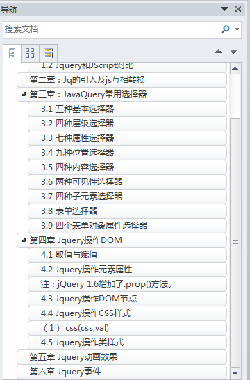

（1）并不是一门新语言。将常用的、复杂的操作进行函数化封装，直接调用，大大降低了使用JavaScript的难度，改变了使用JavaScript的习惯。
（2）常用插件网站：www.jq22.com
（3）导入jquery插件两种方法：
1、网上插件： <script src="http://www.jq22.com/jquery/jquery-1.10.2.js"></script>
2、官网下载，本地导入： <script src="js/jquery-3.3.1.js" type="text/javascript" charset="utf-8"></script>
JS的缺点：（1）选择器功能弱；
（2）DOM操作繁琐
（3）浏览器兼容性不好
（4）动画功能弱
Jq的优点：（1）有强大的选择器
（2）DOM操作简便
（3）浏览器兼容性好
（4）有丰富的插件支持，强大的动画效果
（1）获取对象区别：
var varjs = document.getElementById("uname");
var varjq = $("#uname");
（2）js转换为jq
var varjq = $(varjs);
（3）jq转换为js
方法一：var varjs = varjq.get(0);
方法二：var varjs2 = varjq[0];
注：jq所有对象均为数组类型
val（）：返回或设置被选中元素的值，即value的值
（1）标签选择器
例如：$("div").css("color","red");
（2）Id选择器
例如：$("#unameid")
（3）类选择器
例如：$(".classname")
（4）通配选择器
例如：$("*")
（5）组合选择器
例如：$("#unameid,h3,.myclass");
（1）后代选择器
例如：$("#ul01 li").css("font-size","30px");
$("#ul01 li").css("color","blue");
（2）父子选择器
例如：$("#div03 > h3")
（3）后面第一个兄弟元素
注：必须紧挨当前元素，中间不能 插入其他标签
例如：$("#div03 + div").css("background-color","blue");
（4）后面所有兄弟元素
例如：$("#div03 ~ div").css("background-color","red");
（1）元素名[attribute]：包含一个属性
例如：$("div[id]").css("background-color","red");
（2）元素名[attribute][attribute]：同时包含两个属性
例如：$("div[id][class]").css("background-color","gray");
（3）元素名[属性=value]：一个属性，且属性名=xx值
例如：$("div[class=myclass]").css("color","gold");
（4）元素名[属性！=value]：一个属性，且属性不等于value值
例如：$("div[class!=myclass]").css("background-color","aqua");
（5）元素名[属性^=value]：一个属性，以xx开头
例如：$("div[class^=my]").css("background-color","black");
（6）元素名[属性$=value]：一个属性，以xx结尾
例如：$("div[class$=2]").css("background-color","black");
（7）元素名[属性*=value]：包含xx值
例如：$("div[class*=c]").css("background-color","black");
（1）匹配找到的第一个元素：first
例如：$("tr:first")
（2）匹配找到的最后一个元素：last
例如：$("tr:last")
（3）选择除了xx之外的选择器：not
例如： $("div:not(#div02)")
（4）匹配所有索引值为偶数的元素：even
注：从0开始计数
例如：$("tr:even")
（5）匹配所有索引值为奇数的元素：odd
注：从0开始计数
例如：$("tr:odd")
（6）匹配一个给定索引值的元素：eq（index）
例如： $("tr:eq(1)")
（7）匹配所有大于给定元素索引值的元素：gt（index）
注：不包括本索引代表的元素
例如： $("tr:gt(0)")
（8）匹配所有小于小于给定索引值的元素：lt（index）
注：不包括本索引代表的元素
例如： $("tr:lt("+($("tr").length-1)+")")
（9）匹配如h1、h2、h3之类的标题元素：header
例如：$(":header")
（1）匹配包含给定文本的元素：contains（text）
例如：$("div:contains(div02)")
（2）匹配所有不包含子元素或文本的空元素：empty
例如： $("td:empty")
（3）匹配含有选择器所匹配的元素的元素：has（selector）
例如：$("div:has(h1)")
（4）匹配含有子元素或者文本的元素：parent
例如：$("td:parent")
<body>
<table>
<tr style="display:none"><td>Value 1</td></tr>
<tr><td>Value 2</td></tr>
</table>
</body>
（1）匹配所有的不可见元素：hidden
例如：$("tr:hidden")
（2）匹配所有的可见元素：visible
例如:$("tr:visible")
（1）匹配相关子元素：nth-child（）
例如：$("div h3:nth-child(odd)").css("color","#0000FF");
$("div h3:nth-child(even)").css("color","#0000FF");
$("div h3:nth-child(2n+1)").css("color","#0000FF");//n从0开始
（2）匹配第一个元素：first-child
例如：$("div h3:first-child").css("color","#0000FF");
（3）匹配最后一个元素：last-child
例如：$("div h3:last-child").css("color","#0000FF");
（4）匹配唯一一个子元素：only-child：
例如： $("div h3:only-child").css("color","#0000FF");
（1）匹配所有的input、textarea、select、button元素： ：input
例如：$(":input").addClass("myClass");
（2）所有的单行文本框： ：text
例如：$(":text").addClass("myClass");
（3）所有的密码框： ：password
（4）：radio ：checkbox ：submit ：reset
：botton ：file
（5）：hiddle 匹配所有的不可见元素，或者type为hidden的元素
例如：$("input:hidden").val()
（1）：select 下拉框
例如：$("select option:selected").text()
（2）：checked 复选框
例如：$("input:checked").val()
（3）：enabled
例如：$(":enabled").addClass("myClass")
（4）：disabled
例如：$(":disabled").addClass("myClass")
（1）html()取值 html(txt) 赋值 相当于JS中innerHTML
取值：$("#div01").html() ，取出所有文本，包括html
赋值：$("#div01").html('<font style="color: gold;">hello word</font> ')，会将文本中的html解析进行显示
（2）text()取值 text(txt) 赋值 相当于JS中innerText
取值：$("#div01").text()，仅仅取出文本，不包括html
赋值：$("#div01").text('<font style="color: gold;">hello word</font> ');会将html标签当做普通文本进行赋值
（3）val() 取值 val(val) 赋值 相当于JS中value
例如：$("#textid").val()
（1）获取属性值：attr（attr）
例如：$("#unameid").attr("name")
（2）给指定属性赋值：attr（attr，val）
例如：$("#unameid").attr("value","李四")
（3）去掉指定属性：removeAttr（attr）
例如：$("#unameid").removeAttr("id")
（4）获取属性值：prop（prop）
例如：$("#unameid").prop("name")
赋值：prop（prop，val）
例如：$("#unameid").prop("value","王五")
（5）对符合条件的元素逐个处理：each（index）
function testeach(){
$("input[name=fav]").each(function(index){
//alert(index);
alert(this.value);
})
}
如 checked, selected、readonly、disabled 使用prop()等，返回值是true或者false更加方便处理。
例如： $("#submitid").prop("disabled",!($("#checkid").prop("checked")));
示例代码：
<body>
<ol id="olid">
<li id="li01">北京</li>
<li>上海</li>
<li>武汉</li>
<li>深圳</li>
</ol>
<div id="div01"></div>
<hr />
<input type="button" value="添加子节点" onclick="addchild()"/>
</body>
（1）在末尾添加子元素：append（）、appendTo（）
例如：
例如：var varli = $("<li class='liclass'>西安</li>")
$("#olid").append(varli);
varli.appendTo($("#olid"));
（2）添加子元素前置：prepend（）、prependTo（）
例如：$("#olid").prepend(varli)
varli.prependTo($("#olid"))
（3）添加平级元素（前面）insertBefore（）、before（）
例如：var vardiv = $("<div>div02</div>")
vardiv.insertBefore($("#div01"));
$("#div01").before(vardiv);
（4）添加平级元素（后面）insertAfter（）、after（）
例如：vardiv.insertAfter($("#div01"));
$("#div01").after(vardiv);
（5）替换某个节点replaceWith（）、replaceAll（）
例如：var varli = $("<li>郑州</li>");
$("#li01").replaceWith(varli);
varli.replaceAll($("#li01"));
（6）删除元素：remove(）
例如：$("#olid").remove()
（7）删除子元素：empty()
例如：$("#olid").empty();
例如：$("#divId").css("background-color"，“red”)
（2）css({css1:val1,css2:val2,…..})
例如：$("#divId").css({"background-color":"red","color":"gold"});
（1） hasClass(class) 判断当前对象是否有这个样式(类的样式)--返回是boolean类型的值
例如：$("#divId").hasClass("myclass")
（2）addClass(class) 添加样式， 而不是覆盖类样式
例如："#divId").addClass("myclass myclass2"
（3） removeClass(class) 移除样式,如果()不写移除的样式默认移除所有的样式
例如：$("#divId").removeClass("myclass")
（4）toggleClass(class) 切换样式
例如：$("#divId").toggleClass("myclass myclass2");
（1）显示：show（）
例如：$("#img01").show(3000)
（2）隐藏：hide（）
例如： $("#img01").hide(3000)
（3）从上到下显示：slideDown（）
例如： $("#div01").slideDown(3000)
（4）从下到上隐藏：slideUp（）
例如： $("#div01").slideUp(3000)
（5）淡入：fadeIn（）
例如： $("#img01").fadeIn(3000)
（6）淡出：fadeOut（）
例如： $("#img01").fadeOut(3000)
注：3000代表延时时间，3秒
（1）点击事件：click（）
鼠标移动事件：mousemove（）
鼠标移出事件：mouseout（）
当鼠标指针位于元素上方时：mouseover（）
（2）事件绑定
bind（）：jquery1.7版本之前使用
live（）：在jquery1.9版本删除
on（）：jquery1.7版本出现，推荐使用
on（）优势：统一接口，提高性能。
事件绑定两种方式：
//1 直接 对象.事件()
/*$("#aid").click(function(){
$("#divid").css("display","block");
}).mouseout(function(){
$("#divid").css("color","red");
$("#divid").css("font-size","30px");
});*/
//2 on() 使用on绑定事件
/*$("#aid").on("click",function(){
$("#divid").css("display","block");
}).on("mouseout",function(){
$("#divid").css("color","red");
$("#divid").css("font-size","30px");
})*/
（3）解除绑定
unbind（）：
传参代表解除指定事件
无参代表默认解除所有事件
//4 unbind() 解绑
function testunbind(){
//$("#aid").unbind();//不传参表示解除所有事件,
$("#aid").unbind("mouseenter");
}